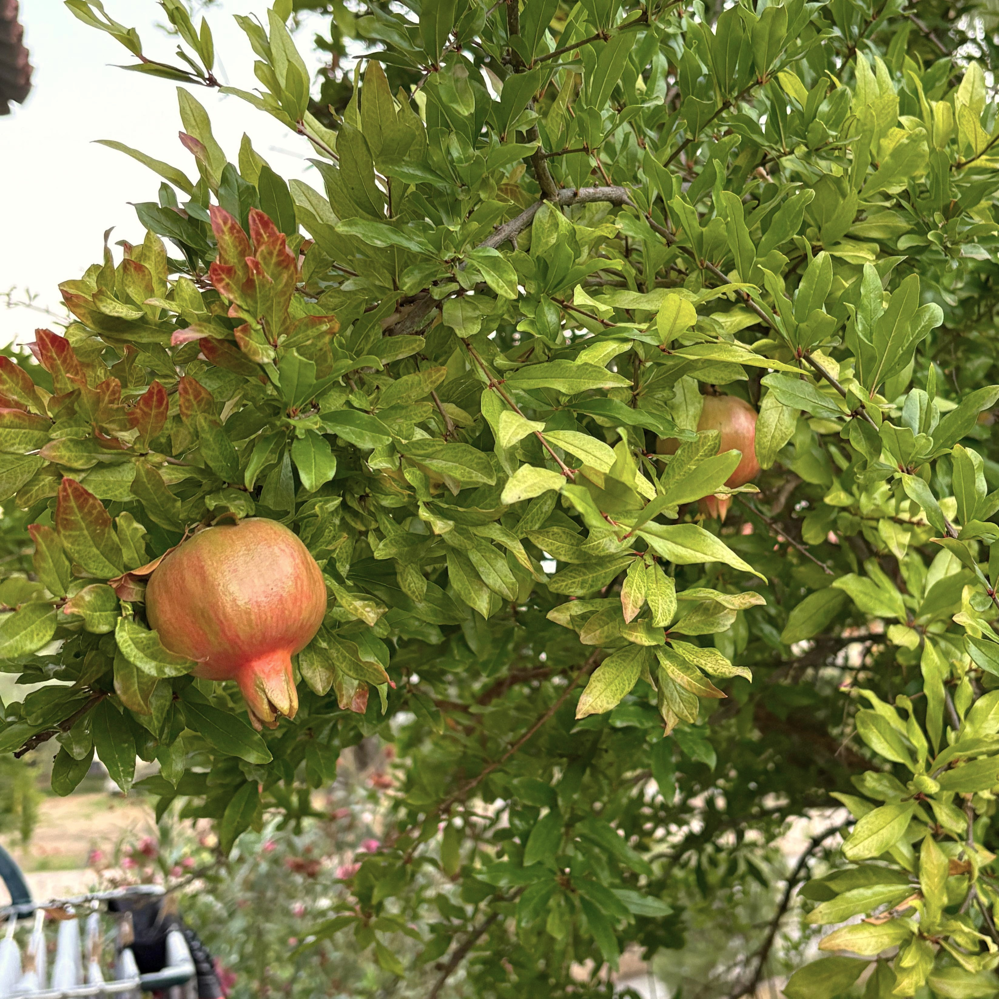
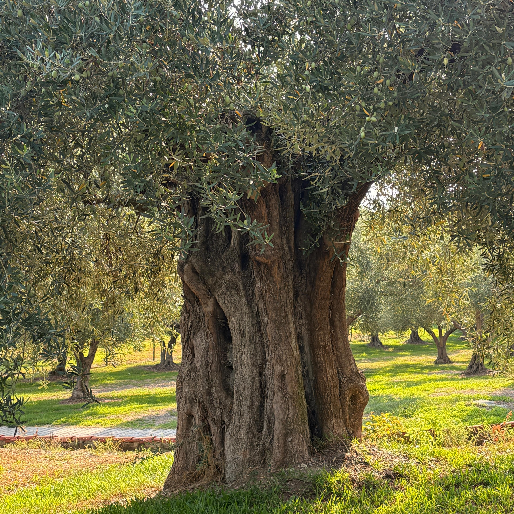
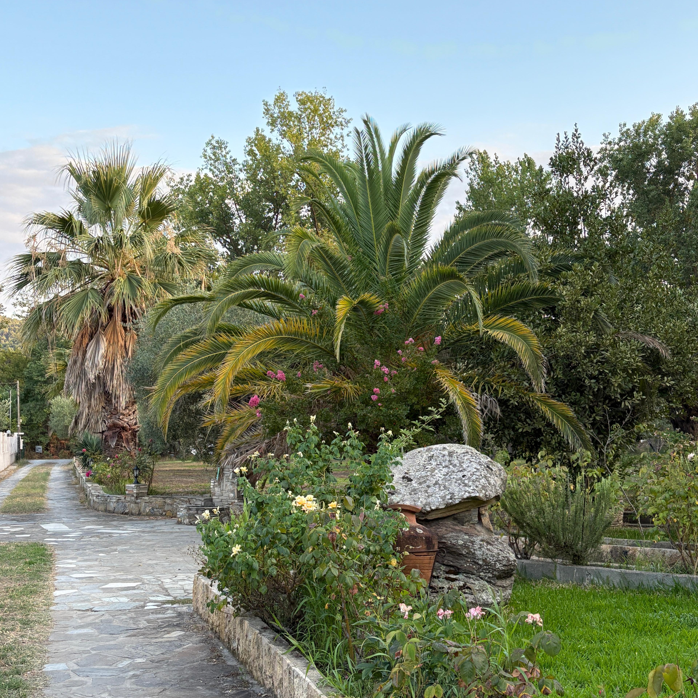
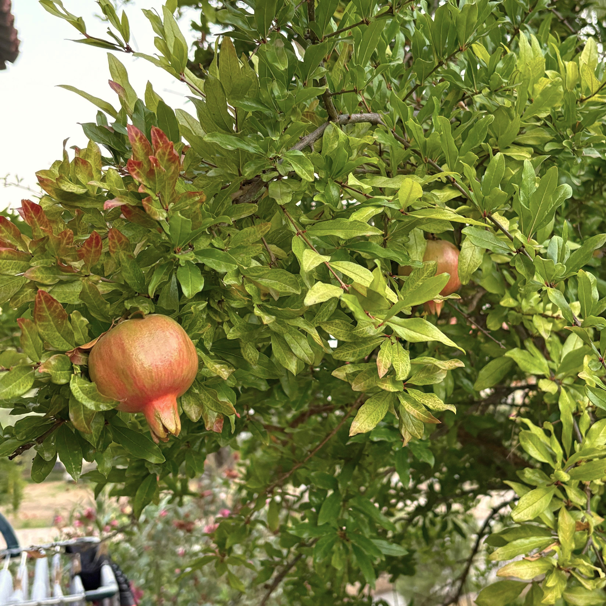
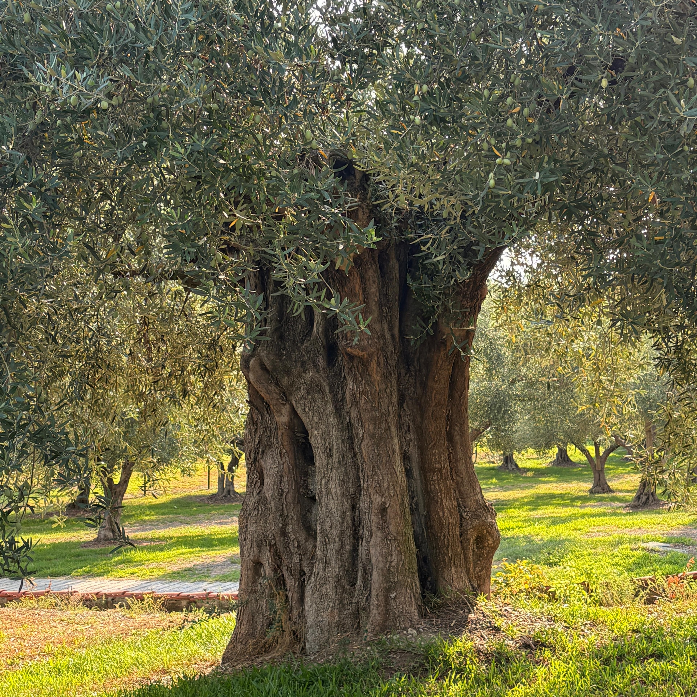
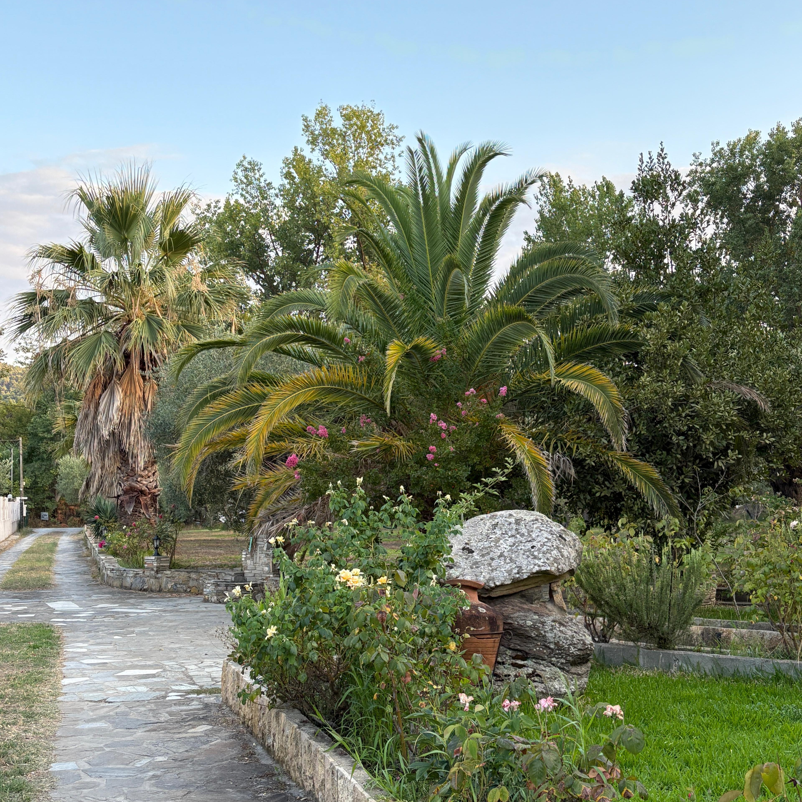

Hobbies & Interests
 





In my free time, I enjoy expressing myself creatively through writing poetry and short essays, as it allows me to reflect on my thoughts, emotions, and experiences. Additionally, I find great joy in photography, especially capturing moments, landscapes, and people that inspire me or evoke strong emotions.
I have a passion for cooking, particularly experimenting with dishes from different cultures and exploring new flavors, which gives me the opportunity to be both creative and adventurous in the kitchen. I also love traveling, as it allows me to experience new places, meet diverse people, and gain fresh perspectives on the world.
Beyond these creative pursuits, I value spending quality time with friends, as socializing not only brings me happiness but also helps me maintain balance and perspective in my daily life.
I consider myself a motivated and curious person who enjoys learning new things and adapting to different environments. Having lived in several countries, I have developed resilience, flexibility, and an open-minded attitude. I value teamwork and communication, but I also enjoy working independently when needed.